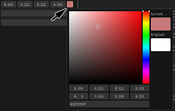

03. 显示图片！¶
概要¶
在这一章中，粒子上会显示图像。到目前为止，它们一直是白色的方块，但白色方块将换成图像。此外，粒子会逐渐变得透明并改变颜色。
预备知识 - 当窗口关闭或者错位¶
如果你在窗口之间来回切换，它们可能会变得错位或关闭。如果发生这种情况，在菜单栏中选择“窗口”，选择“重置窗口位置”，使每个窗口回到其初始位置。选择每个窗口的名称来打开该窗口。
显示图像¶
自己准备图片很麻烦，所以我们让大家可以从下面的链接下载预制的特效素材。
图像设置¶
让我们开始在白色方块中添加图像。图像是在“基础渲染设置”窗口中设置的。点击右上角选项卡中的“基础渲染设置”图标，并选中一个节点。
基础渲染设置的图标
点击“基础渲染设置”图标，并选中一个节点，将显示“基础渲染设置”窗口。

“基础渲染设置”窗口
点击“基础渲染设置”窗口中的载入按钮。点击后，出现一个选择图像的窗口。选择particle.png。选择后，该图像也将出现在Effekseer中。
图像设置
播放特效，你会看到白色方块已经变成了一个图像。

图像设置
淡入淡出设置¶
粒子突然出现或消失是不自然的。设置一下淡入和淡出，使透明度发生变化。
淡入可以通过改变“基础渲染设置”窗口中的淡入值来设置。同样地，淡出可以通过改变“基础渲染设置”窗口中的淡出值来设置。在这个例子中，两者都输入15。
淡入淡出设置
你可以看到特效逐渐出现和消失。

淡入淡出设置
精灵¶
Effekseer提供几种渲染方法。默认设置是“精灵”。你可以绘制方形的粒子。你可以创造这样的特效，尽管只用到本章为止所介绍的内容很难做到。
精灵
在“渲染设置”窗口中，你可以为当前选定的渲染方法设置特定的功能。我们可以像打开“基础渲染设置”窗口一样打开“渲染设置”窗口。
渲染设置的图标
“渲染设置”窗口
颜色设置¶
你可以用淡出设置透明度，但不可以设置粒子的颜色。如果图像是彩色的，这不是问题，但要改变每个粒子的颜色，你需要准备几个图像。因此，你可以在选择一个精灵时为粒子设置一个粗略的颜色范围。
你可以在“渲染设置”窗口中设置该颜色。有几种方法来设置颜色。对于这个例子，选择随机，这样每个粒子的颜色都会变化。然后，将最小值设置为0。这意味着颜色将随机地选择0到255之间的数值。
除了在文本框中输入颜色外，还可以用鼠标左键点击颜色区域。
左键点击并拖拽颜色区域可以将其复制到另一个颜色区域。

设置一个颜色
你可以看到每个粒子的颜色都是不同的。

设置一个颜色


总结¶
在这一章中，我们改变了精灵的参数以改善粒子的外观。在下一章中，我们将讨论精灵的形状，以及粒子的旋转和缩放。